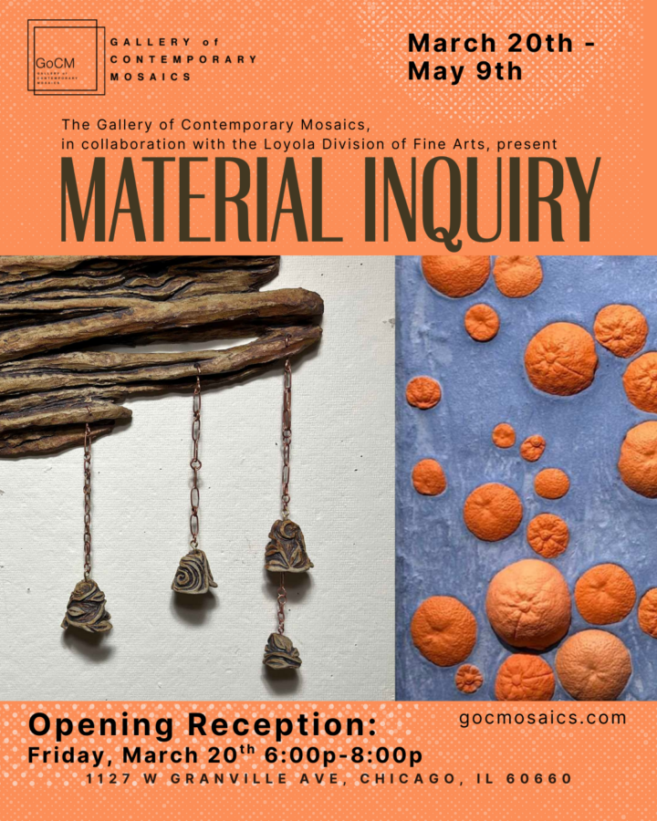

Material Inquiry
Join us Friday, March 20th 6pm-8pm, for the opening of the collaborative exhibition of the Gallery of Contemporary Mosaics and the Loyola Division of Fine Arts, “Material Inquiry”.
On view March 20 to May 9, 2026
The show features works that convey meaning through embodied art practices. These pieces explore the rich history, tradition, and cultural expression of contemporary sculpture, including ceramics, glass, and stone, as well as innovative, re-interpretative sculptural works using non-traditional materials that push the boundaries of visual art.
We are proud to showcase work from the following artists:
CJ Miller
Elena Roth
Larinda Di Gioia
Laura Marie Sanchez